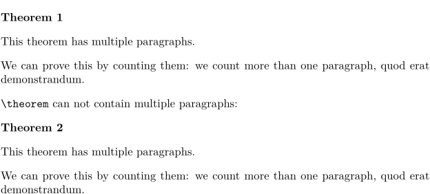
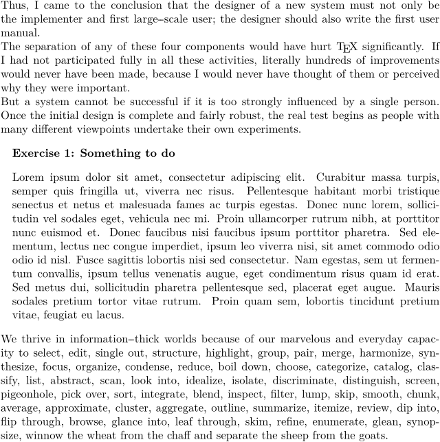

Syntax (autogenerated)
Syntax
| \startenumeration ... \stopenumeration |
Description
Multi-paragraph numbered objects, previously defined using \defineenumeration. See \defineenumeration for more elaborate info.
Examples
-
\setupwhitespace[big] \defineenumeration[theorem][text=Theorem, location=left] % In mkiv we would write `alternative=left`. \starttheorem This theorem has multiple paragraphs. We can prove this by counting them: we count more than one paragraph, quod erat demonstrandum. \stoptheorem \tex{theorem} can not contain multiple paragraphs: \theorem This theorem has multiple paragraphs. We can prove this by counting them: we count more than one paragraph, quod erat demonstrandum.
This gives:
- 
It’s also possible to have titles:
-
\defineenumeration[Exercise][ text=Exercise, stopper={:}, title=yes, % activate title titleleft=, titleright=, way=bytext, % don’t restart numbering per chapter margin=1em, % indenting ] \samplefile{knuth} \startExercise[title={Something to do},reference=ex:something] \samplefile{lorem} \stopExercise \samplefile{tufte}
- 
See also
- \defineenumeration for creating new kinds of numbered objects.
- \setupenumerations for setting up looks and behaviour.
- \enumeration for single-paragraph numbered objects.
- \startenumeration for multiple-paragraph numbered objects.
Help from ConTeXt-Mailinglist/Forum
All issues with: